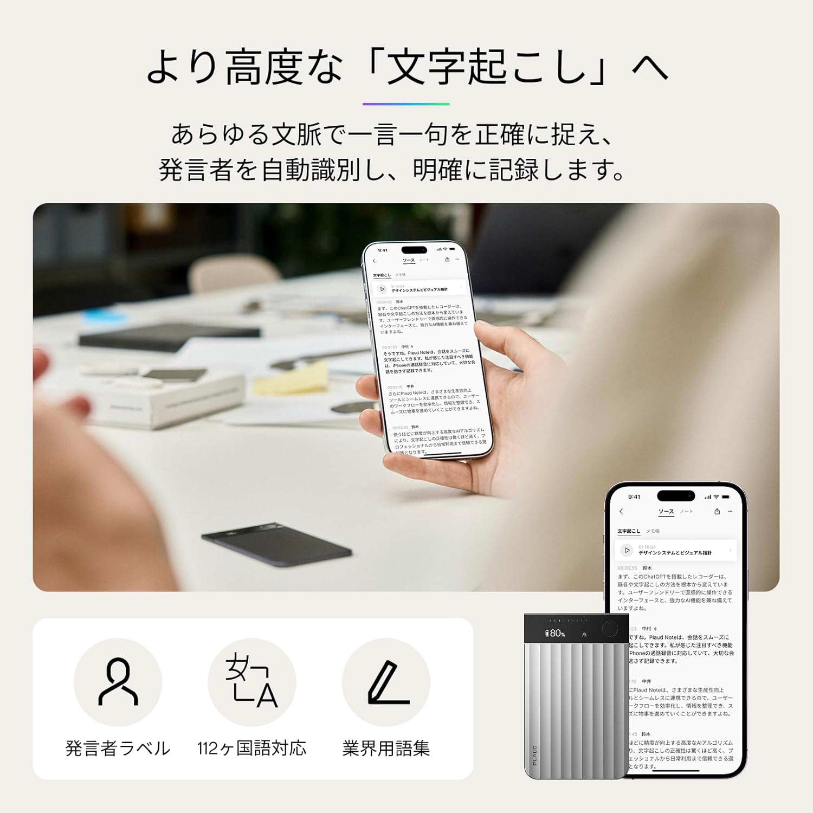

会議が終わった後の「あのメモどこ書いたっけ」「あの発言誰だっけ」が、完全になくなった。
議事録作成という「誰がやっても報われない仕事」
会議の議事録を書くのが得意な人間は、おそらくいない。会議中はメモを取りながら発言もしなければならない。終わった後は記憶と走り書きを頼りに文章を整える。誰が何を言ったかあいまいになる。確認のために録音を聞き直す。1時間の会議の議事録に1時間以上かかる、という経験は珍しくない。
PLAUD NOTEはその問題を、会議中にテーブルに置くか胸ポケットに入れておくだけで解決する。録音は自動。文字起こしはAI。要約はGPT-4o。会議が終わったら、アプリを数タップするだけで議事録のドラフトが完成する。
初めて使ったとき、「これまでの時間は何だったんだ」という感覚が来た。
PLAUD NOTEとは
Nicebuild LLC（PLAUD.AI）が開発・販売するAI連携ボイスレコーダー。クレジットカードとほぼ同じサイズ（85.6×54.1mm）・厚さ2.99mm・重さ30gという極薄ボディに、ノイズキャンセリング対応のデュアルマイク「Knowles Sisonic」を搭載。録音した音声をクラウドAIが文字起こし・要約・マインドマップ作成まで自動で行う。
世界で150万人を超えるユーザーが利用する、AI連携ボイスレコーダーのグローバルスタンダードだ。
| サイズ・重量 | 85.6×54.1×2.99mm・30g（クレジットカードサイズ） |
|---|---|
| マイク | Knowles Sisonic デュアルマイク・ノイズキャンセリング（25dB以上削減）・最大1536kbps Hi-Fi |
| 連続録音時間 | 最大30時間（スタンバイ最大60日） |
| ストレージ | 64GB（ローカル保存） |
| 録音モード | 対面録音・通話録音（スマホに装着してスピーカー音声を録音） |
| AI文字起こし | OpenAI Whisper・112言語対応・発言者自動識別・業界用語集対応 |
| AI要約 | GPT-4o / Claude 3.5 / o3-mini（選択可）・テンプレート10,000種以上 |
| 無料枠 | 月300分の文字起こし無料（購入特典） |
| 接続 | Bluetooth・Wi-Fi高速転送 |
| セキュリティ | ISO 27001・SOC 2 Type II・HIPAA・GDPR準拠 |
使ってわかった、3つの「これは神だ」ポイント

1. 発言者の自動識別が、議事録の価値を根本から変える
普通の文字起こしツールが出力するのは「誰かが言った言葉の羅列」だ。どの発言が誰のものかを後から特定するのは、人間の仕事になる。
PLAUD NOTEの「Plaud Intelligence」は、複数の発言者を音声の特徴から自動識別し、「田中：〇〇と思います」「鈴木：それについては〜」という形で発言者ラベル付きのテキストを生成する。誰が何を言ったかが一目でわかる。「あの発言は誰だったっけ」という確認作業が完全になくなった。
30分の会議で参加者が5人いても、発言者を区別してまとめてくれる。これは人間が手で書く議事録と同等以上の情報量だ。
2. 「録音→文字起こし→要約→マインドマップ」がワンストップで終わる
会議が終わったら、アプリを開いて「文字起こし」をタップ。数十秒後にテキストが出来上がる。次に「要約」を選んで会議テンプレートを選択。GPT-4oが会議の内容を整理し、決定事項・アクションアイテム・次回議題を自動的に構造化してくれる。
実際の体験として、30分の打ち合わせの文字起こし・要約・マインドマップ生成まで5分かからなかった。かつて1時間以上かけていた作業が、アプリをタップするだけになった。この時間の差は、週に何度も会議がある人間にとって、数字にならない価値だ。
3. 通話録音モードで、電話営業・商談の記録が変わる
PLAUD NOTEはスマートフォンの背面にマグネットで貼り付けることができる（MagSafe対応）。通話中にスピーカーモードで会話すると、スマートフォンのスピーカーから出る音声をマイクで拾って録音する仕組みだ。
電話商談・顧客との通話・採用面接——通話中にメモを取りながら対応するのは難しい場面が多い。PLAUD NOTEを装着しておけば、通話に集中できる。終わった後でアプリを開けば、通話内容の文字起こしと要約が待っている。「あの通話で何を約束したか」という不安がなくなる。
正直に書く「気になる点」
- 月300分を超えると、有料プランが必要になる。
毎日長時間の会議がある人や、ヘビーユーザーにとってはランニングコストが発生する。ライトユーザー（月数回・合計300分以内）なら追加費用なしで使い続けられる。自分の使用量を事前に見積もることが大事だ。 - 文字起こしはクラウド処理のため、同期が必要。
録音後にアプリと同期する必要があり、オフライン環境では文字起こしができない（録音自体はオフラインで可能）。インターネット接続が必要なことは把握しておきたい。 - 専門用語・固有名詞は誤変換が発生することがある。
AIの文字起こしは非常に高精度だが、業界用語・方言によっては誤変換が発生する。業界用語集機能で登録しておくと精度が上がる。「完璧ではないが、人間が1から書くより圧倒的に速い」というのが正直な評価だ。 - 録音には参加者への事前告知が必要。
「AI文字起こしのために録音させてください」という一言を忘れないこと。これはマナーの問題だが、PLAUD公式も推奨している。
こんな人に向いている
会議・打ち合わせの議事録作成に時間を取られているビジネスパーソン、電話商談・顧客通話の内容を正確に記録したい営業職、取材・インタビューの文字起こしを効率化したいライター・記者、講義・セミナーの内容を後から復習したい学生・社会人学習者、アイデアを声でメモしてテキスト化したい人には特におすすめできる。
総評｜議事録の辛さが、カードサイズの板1枚でなくなる
「議事録を書く」という仕事は、本来の仕事ではない。会議で意思決定をすること、アイデアを出すこと、相手と信頼関係を築くこと——それが本来やるべきことだ。その後に1時間かけて記録を整理するのは、生産性の観点から見ると明らかに非効率だった。
PLAUD NOTEはその非効率を、カードサイズの板1枚で解決する。価格は本体のみで約2万円台後半。毎週の会議が減らす時間と精神的負荷を考えると、多くのビジネスパーソンにとって元が取れる速度は速い。
議事録の辛さを感じたことがある人なら、一度試す価値は確実にある。